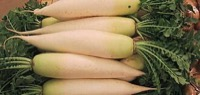

大根の生産量 都道府県ランキング
全37都道府県の順位と収穫量
大根の収穫量が全国で最も多いのは千葉県で、13万5,800 tです。全国（108万2,000 t）の13%を占めます。

| 順位 | 都道府県 | 収穫量 | 全国に占める割合 |
|---|---|---|---|
| 1位 | 千葉県 | 13万5,800 t | 13% |
| 2位 | 北海道 | 12万7,000 t | 12% |
| 3位 | 青森県 | 11万 t | 10% |
| 4位 | 鹿児島県 | 8万2,400 t | 7.6% |
| 5位 | 神奈川県 | 6万6,500 t | 6.1% |
| 6位 | 宮崎県 | 5万8,500 t | 5.4% |
| 7位 | 茨城県 | 4万8,300 t | 4.5% |
| 8位 | 新潟県 | 3万9,100 t | 3.6% |
| 9位 | 長崎県 | 2万7,900 t | 2.6% |
| 10位 | 群馬県 | 2万4,500 t | 2.3% |
| 11位 | 熊本県 | 2万2,800 t | 2.1% |
| 12位 | 岩手県 | 2万2,500 t | 2.1% |
| 13位 | 埼玉県 | 2万2,100 t | 2.0% |
| 14位 | 徳島県 | 2万700 t | 1.9% |
| 15位 | 愛知県 | 2万100 t | 1.9% |
| 16位 | 岐阜県 | 1万8,700 t | 1.7% |
| 17位 | 福島県 | 1万8,500 t | 1.7% |
| 18位 | 静岡県 | 1万6,300 t | 1.5% |
| 19位 | 長野県 | 1万4,100 t | 1.3% |
| 20位 | 福岡県 | 1万2,300 t | 1.1% |
| 21位 | 秋田県 | 1万2,100 t | 1.1% |
| 22位 | 栃木県 | 1万2,000 t | 1.1% |
| 23位 | 山形県 | 1万400 t | 1.0% |
| 24位 | 大分県 | 1万300 t | 1.0% |
| 25位 | 山口県 | 9,220 t | 0.9% |
| 26位 | 兵庫県 | 9,000 t | 0.8% |
| 27位 | 広島県 | 8,290 t | 0.8% |
| 28位 | 宮城県 | 7,800 t | 0.7% |
| 29位 | 和歌山県 | 7,460 t | 0.7% |
| 30位 | 岡山県 | 7,240 t | 0.7% |
| 31位 | 石川県 | 7,030 t | 0.6% |
| 32位 | 東京都 | 6,920 t | 0.6% |
| 33位 | 香川県 | 6,490 t | 0.6% |
| 34位 | 福井県 | 4,980 t | 0.5% |
| 35位 | 滋賀県 | 2,840 t | 0.3% |
| 36位 | 富山県 | 2,780 t | 0.3% |
| 37位 | 奈良県 | 2,630 t | 0.2% |
PR

大根の生産量の推移（令和2年産〜令和6年産）
全国の収穫量は、令和2年産の125万4,000 tから令和6年産の108万2,000 tへ、14%減りました。期間中、1位は一貫して千葉県です。
| 年 | 全国 | 1位 | 2位 | 3位 |
|---|---|---|---|---|
| 令和6年産 | 108万2,000 t | 千葉県13万5,800 t | 北海道12万7,000 t | 青森県11万 t |
| 令和5年産 | 114万1,000 t | 千葉県14万6,800 t | 北海道12万7,200 t | 青森県10万2,900 t |
| 令和4年産 | 118万1,000 t | 千葉県14万4,900 t | 北海道12万8,800 t | 青森県10万7,300 t |
| 令和3年産 | 125万1,000 t | 千葉県14万7,500 t | 北海道14万3,200 t | 青森県11万4,400 t |
| 令和2年産 | 125万4,000 t | 千葉県14万8,100 t | 北海道14万7,200 t | 青森県11万5,700 t |
この数字について
- 分類：アブラナ科
- 全国の収穫量：108万2,000 t
- この数字が表すもの：収穫量（収穫された重量）
- 調査：作物統計調査 作況調査（野菜） 令和6年産
- 37県分を調査（調査していない県は順位に入りません）
大根の生産量について、よくある質問
- 大根の生産量が日本一の都道府県はどこですか？
- 千葉県です。作物統計調査 作況調査（野菜）（令和6年産）で13万5,800 tでした。
- 大根の生産量ランキング2位・3位はどこですか？
- 2位は北海道（12万7,000 t）、3位は青森県（11万 t）です。
- 大根の生産量ランキング4位・5位はどこですか？
- 4位は鹿児島県（8万2,400 t）、5位は神奈川県（6万6,500 t）です。大根の全37県の順位は上の表のとおりです。
- 大根の全国の生産量はどれくらいですか？
- 108万2,000 t（令和6年産）です。